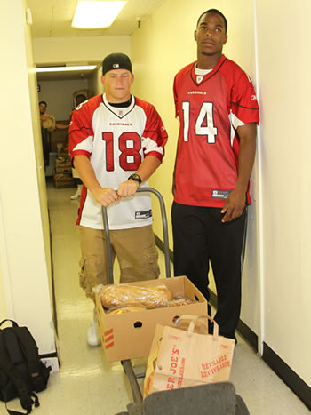
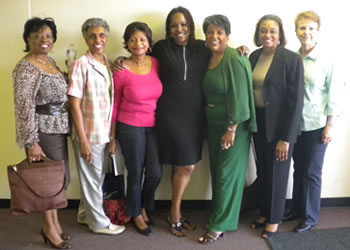

Cardinals Rookies and Links Assist
Food and Nutrition Program

Arizona Cardinals rookies Max Komar (#18) and Stephan Williams (#14) were among 15 rookie players who donated their time this summer to assist the community-based BFCS Food Box Program. The rookie players assisted with packing food boxes for the agency's clients.
More than 900 people per month are served by the BFCS Food Box Program, which is a part of the agency's Food and Nutrition Program. For more information about the program and eligibility requirements, click here.
As part of the agency's Food and Nutrition Program, the agency also provides a monthly class in healthy food preparation to teach parents ways to prepare healthy meals for their children and families.
Volunteers from the Phoenix Chapter of Links, Inc. recently prepared food and presented a healthy cooking class for BFCS clients at its Family Service Center in south Phoenix.

Pictured volunteers and BFCS staff include (left to right): BFCS CEO Mary M. Black; Ella Holland, BFCS board member Marjorie Kyle, Katrina Covington-Whitmore, Grace Strauther, Jennifer Harper, and BFCS Food and Nutrition Program Coordinator Jean Tyndall.
For more information about food preparation classes, call BFCS at 602-243-1773.